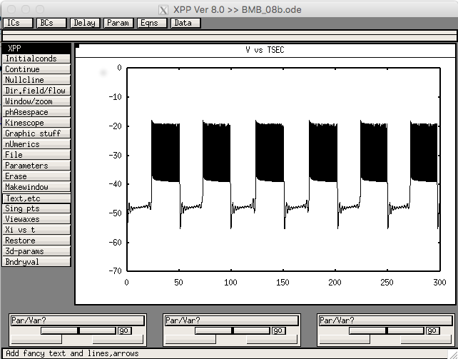
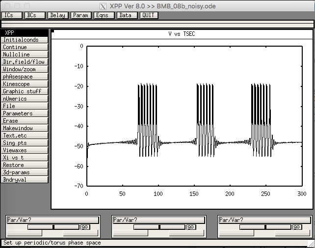
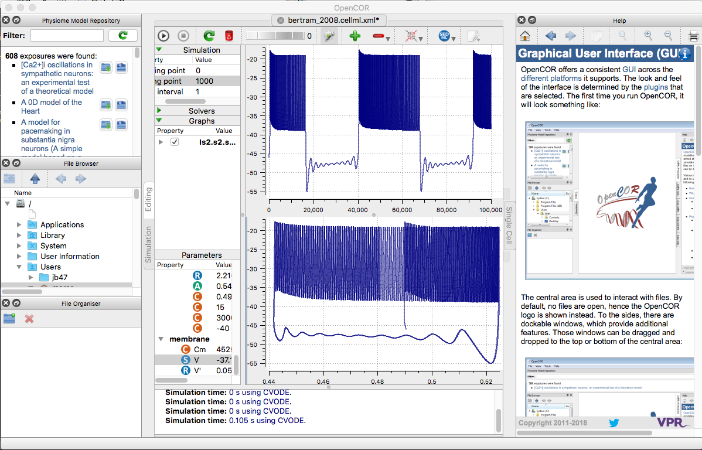

The models for the paper:
A phantom bursting mechanism for episodic bursting, R. Bertram, J. Rhoads and W.P. Cimbora, 2008, Bulletin of Mathematical Biology, 70, 1979-1993.
PubMed ID: 18648884
doi: 10.1007/s11538-008-9335-0
are available in xpp at the authors web site:
https://www.math.fsu.edu/~bertram/software/neuron/
After starting the BMB_08b.ode, and then for second graph BMB_08b_noisy.ode below in xpp select Initalconds -> Go to generate these images:


and the noise-less version is available at cellml.org:
https://models.cellml.org/exposure/48e767ee37f347e1a3876d0549a0866b/bertram_2008.cellml/view
After loading the bertram_2008.cellml.xml in opencor, right click the membrane voltage in the parameter panel and select to plot against either integration variable (top plot), or s2 (buried in Plot against -> ls2 -> s2 -> s2):

It reproduces figure 4, where g_K1 = 20pS